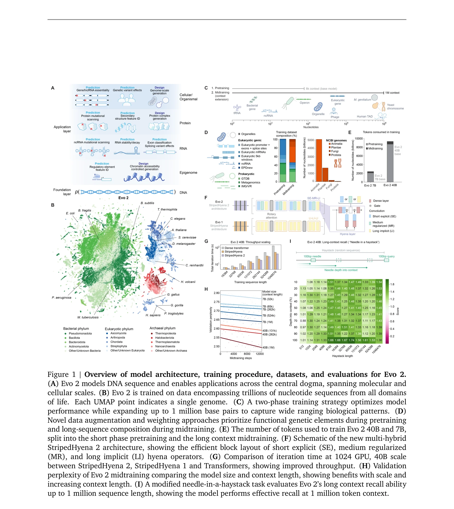

저자: Garyk Brixi, Matthew G. Durrant, Jerome Ku, Michael Poli, Greg Brockman, Daniel Chang, Gabriel A. Gonzalez, Samuel H. King, David B. Li, Aditi T. Merchant, Mohsen Naghipourfar, Eric Nguyen, Chiara Ricci-Tam, David W. Romero, Gwanggyu Sun, Ali Taghibakshi, Anton Vorontsov, Brandon Yang, Myra Deng, Liv Gorton, Nam Nguyen, Nicholas K. Wang, Etowah Adams, Stephen A. Baccus, Steven Dillmann, Stefano Ermon, Daniel Guo, Rajesh Ilango, Ken Janik, Amy X. Lu, Reshma Mehta, Mohammad R.K. Mofrad, Madelena Y. Ng, Jaspreet Pannu, Christopher Ré, Jonathan C. Schmok, John St. John, Jeremy Sullivan, Kevin Zhu, Greg Zynda, Daniel Balsam, Patrick Collison, Anthony B. Costa, Tina Hernandez-Boussard, Eric Ho, Ming-Yu Liu, Thomas McGrath, Kimberly Powell, Dave P. Burke, Hani Goodarzi, Patrick D. Hsu, Brian L. Hie | 날짜: 2025-02-21 | DOI: 10.1101/2025.02.18.638918

Figure 1 | Overview of model architecture, training procedure, datasets, and evaluations for Evo 2.
Evo 2는 9.3조 개의 DNA 염기쌍으로 훈련된 생물학적 기초 모델로, 7B와 40B 매개변수로 1백만 토큰 컨텍스트 윈도우를 가지며 모든 생명 영역에서 게놈 모델링 및 설계를 수행한다.
Figure 1 | Overview of model architecture, training procedure, datasets, and evaluations for Evo 2.
총평: Evo 2는 게놈 기초 모델로서 unprecedented 규모(9.3조 토큰, 1백만 컨텍스트 윈도우)와 성능(변이 효과 예측, 게놈 규모 생성, 기계적 해석가능성)을 달성하였으며, 완전 공개 모델과 데이터셋으로 합성생물학과 게놈 설계 분야에 혁신적 기여를 제시한다.